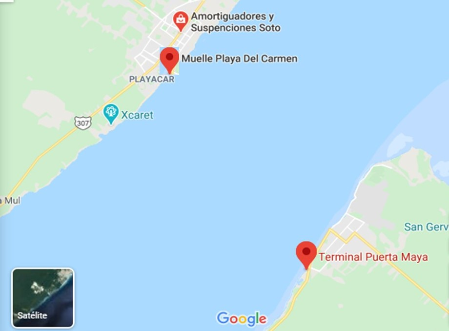

Contact Us

Cozumel is a mostly undeveloped Mexican island in the Caribbean and is a popular cruise port, famous for its dive sites. In the Cozumel Reef National Park, there are diving spots around a section of the Mesoamerican reef and the underwater sculptures of the Underwater Museum of Art. Chankanaab is an ecological park that surrounds a lagoon with underwater caves and that houses dolphins, manatees and sea turtles. Cozumel is one of the oldest in Mexico and the most important. It is a mixture of diverse cultural expressions, dances and rhythms of the Yucatan Peninsula and the Caribbean.
We are just Here
